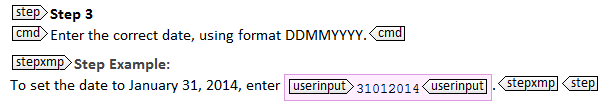
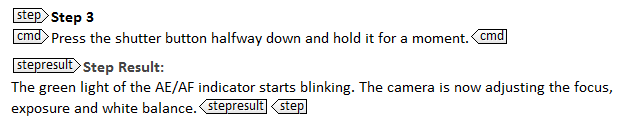
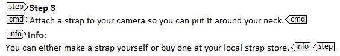

DITA provides a series of elements that allow you to add extra info to your steps. The most common and useful ones are <stepxmp>, <stepresult>, <info> and <note>.
<stepxmp>
If you want to provide an example of what to do in a particular (sub)step, use the <stepxmp> element. An example helps users understand how to complete the step.

<stepresult>
If you want to describe the outcome of a particular action, use the <stepresult> element. By adding a result, you can assure users that they are still on the right track. This is especially useful when the result of a step is somewhat strange or worrying.

CAUTION: Do not add a <stepresult> to each step and do not use it to point out obvious results. For example, in software documentation do not use it to indicate that a particular dialog is displayed: users see the dialog on their screen when they are executing the task. If you think the users might get confused about where they are in the interface, you can always start the next step by pointing out which dialog they have to use (for example "In the Save as dialog, enter a name for your file and click Save").
<info>
If you want to add extra information to a step that does not fit in the <stepxmp> or <stepresult> element, you can use the <info> element. Be careful, however, not to include long conceptual information or extra instructions in the <info> element. All instructions have to be written in a <cmd> element.

Tip: Use the <info> element as a container element for other elements. This is especially useful for elements that cannot be directly inserted into a <step> element (<note>, <fig>, <image>, ...).
<tutorialinfo>
The <tutorialinfo> element contains additional information that is useful when the task is part of a tutorial.